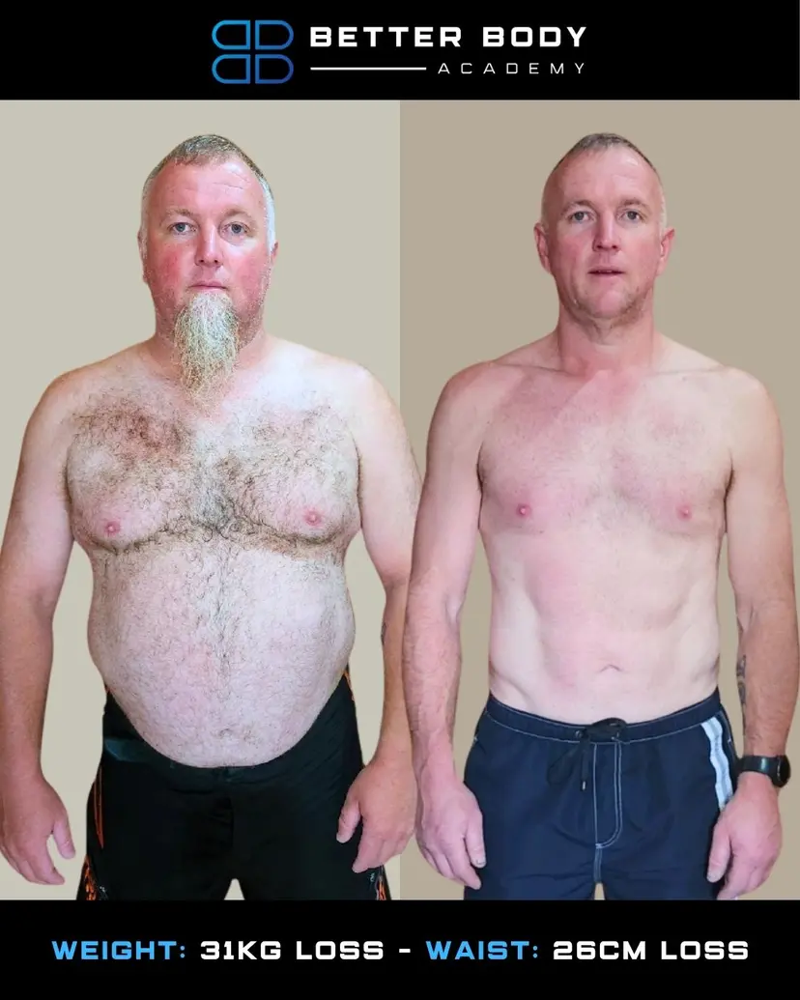
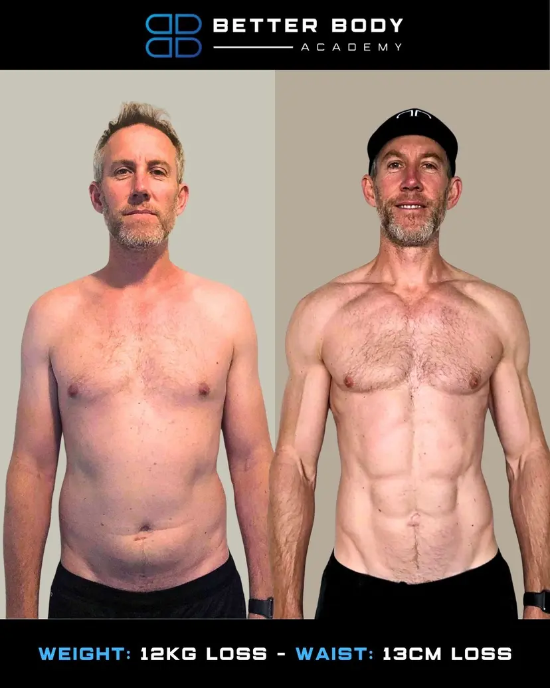
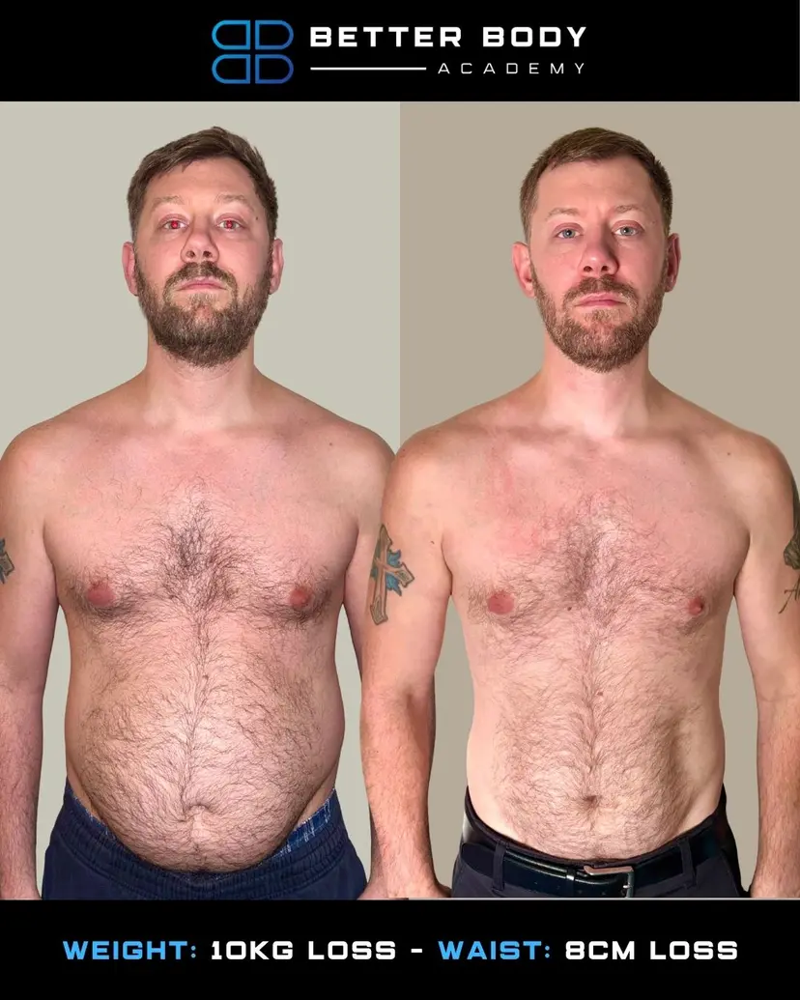
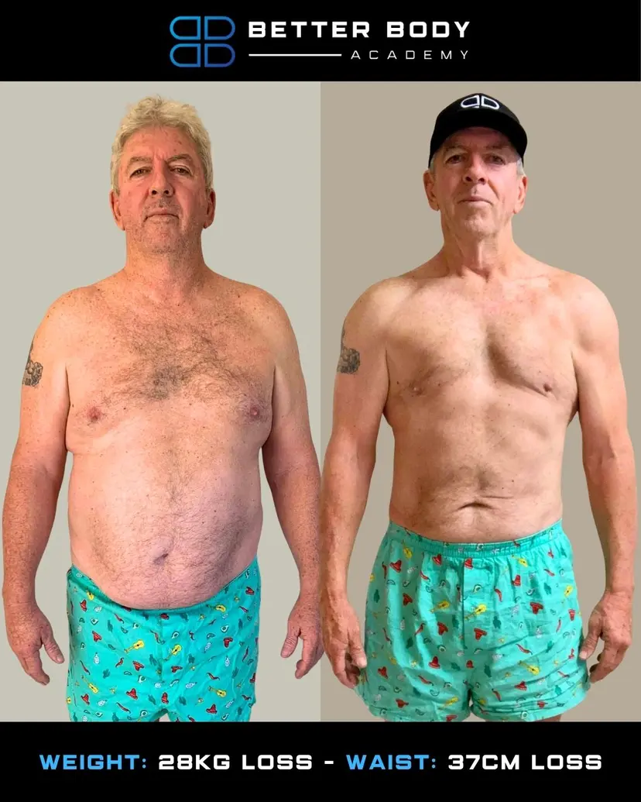
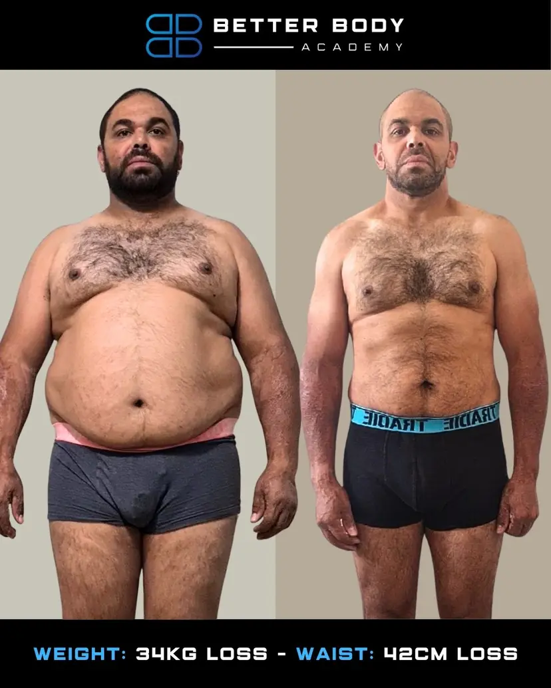
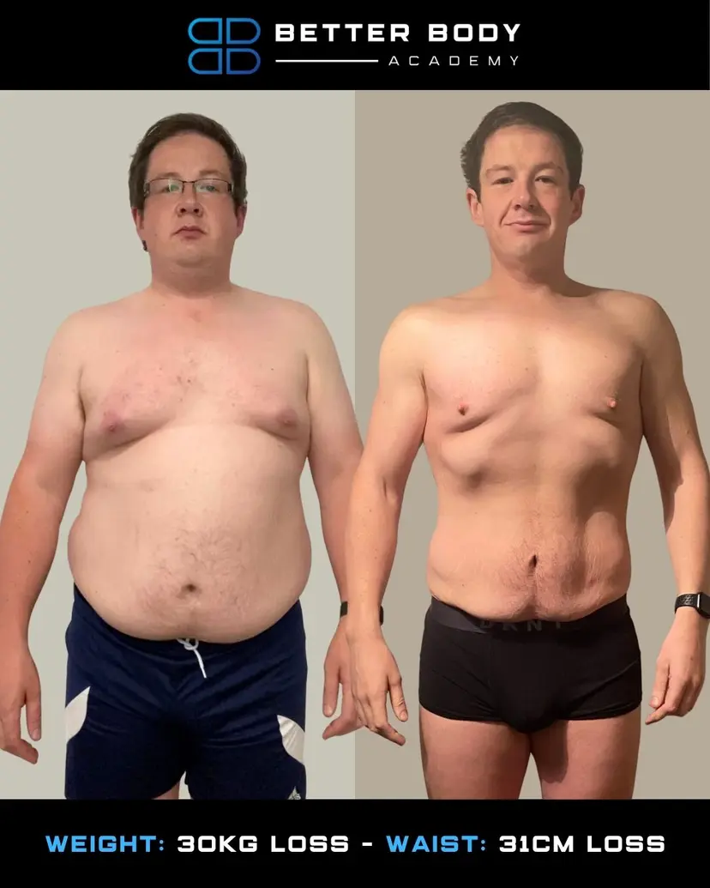
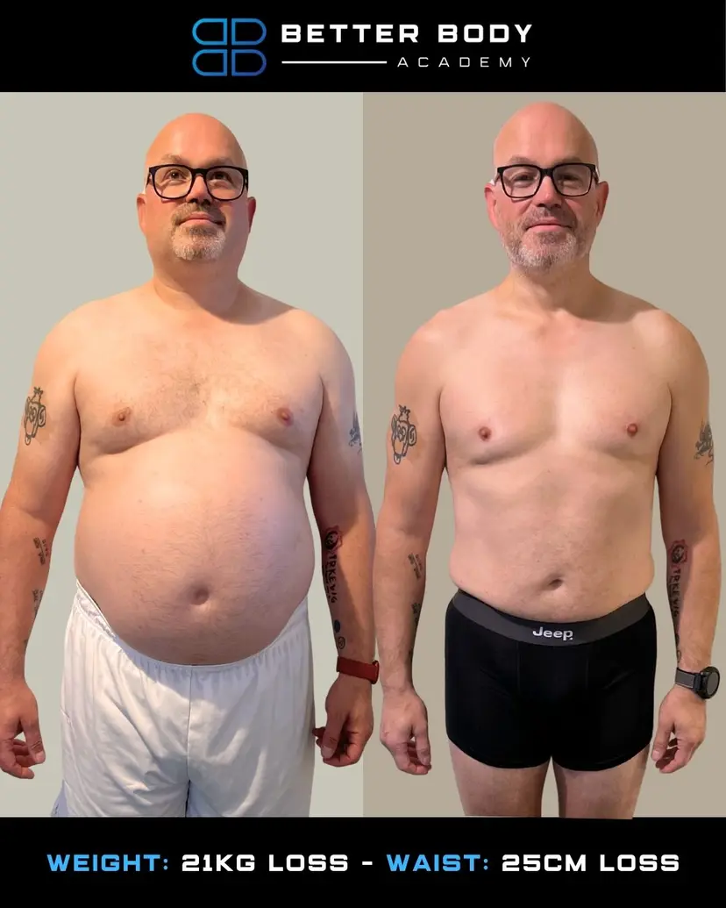
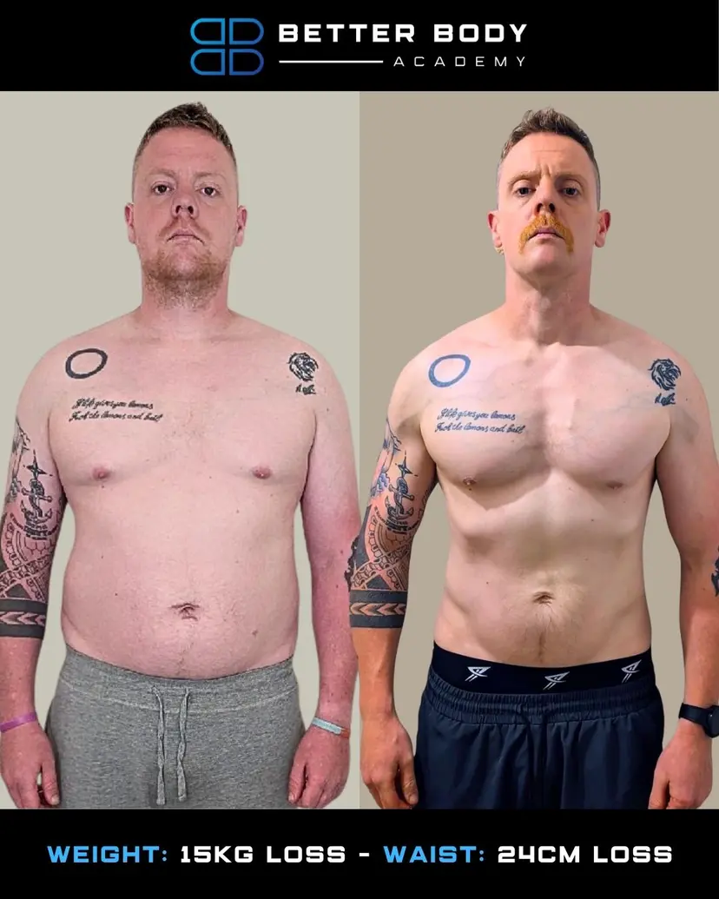

Nutrition That Fits Real Life
No restrictive diets
Eat out without guilt
Built for busy schedules
 Logo-Horizantal White.png)
Men's program
Jase Stuart's program is live and running — we're just building out the proper landing page for it. For now, head to the main site or apply directly below.
Looking for the women's side? That's here →
AS SEEN IN...
It's not your discipline. It's the strategy you've been following.
Once you fix these 4 things, fat loss becomes dramatically easier.
Nutrition That Fits Real Life
No restrictive diets
Eat out without guilt
Built for busy schedules
Smart Strength Training
3–4 sessions a week max
Joint-friendly programming
Track progress, not pain
Recovery & Hormones
Sleep that actually restores
Stress-load management
Hormone-supportive habits
Accountability That Works
Weekly check-ins
Coach-led course corrections
A team in your corner
4000+ transformations and counting

Client 1

Client 2

Client 3

Client 4

Client 5

Client 6

Client 7

Client 8
A coach reads every one personally. If it's a fit, you'll pick a time to chat. If it's not, we'll tell you straight — no sales pitch.
GHL Application Form Embed
Paste your GoHighLevel iframe embed code here to replace this placeholder.
After you submit, you'll land on the calendar to pick a time. Your details stay exactly where they need to — straight into the BBA sales tracker.
From the gut, the energy, the sleep, the strength — here's what blokes who finished the program had to say.
Down 18kg in 6 months. I finally have the energy to keep up with my kids — and my wife noticed before I did.
I tried every diet you can name. This was the first program that didn't ask me to quit my life to follow it.
Lost the belly, kept the strength. At 42 I'm in the best shape since my twenties.
The accountability is what makes it work. Knowing someone is checking in flips a switch.
Three sessions a week. That's it. And I'm leaner now than when I was doing two-a-days.
Sleep, food, training — they sorted all of it. My energy is unrecognisable.
The stuff blokes ask before they sign up. Straight answers, no fluff.
That's why we built it. The reason you've failed before isn't you — it's that every program you've tried was built for someone whose life looks nothing like yours. We start with the reality of your week, not a fantasy version of it.
Then you're exactly who this is built for. Short, focused sessions. Meals that don't require meal-prepping on Sunday like a gym bro. The whole system is designed around men with careers, families, and limited hours.
No. No extreme diets. You'll eat real food, drink the occasional beer, and still get leaner every week. If a coach tells you a food is 'bad,' they're selling you religion, not results.
We've coached both ends of that spectrum and everyone in between. The system doesn't change based on how much you have to lose — the timeline does.
That's a chat for your GP. What I'll tell you is this: quick fixes lead to quick failures. The weight comes back the second you stop. You're not broken because you haven't found the right pill — you're stuck because you haven't built a system.
No — this page is the men's program. Women should check out the women's side, coached by Carly and Erin. The physiology's different and we don't do one-size-fits-all.
You've read enough. You already know which of the six pain points hit. The application's two minutes. A coach reads every one.
Not for you? Head back to the splitter or check the women's side.